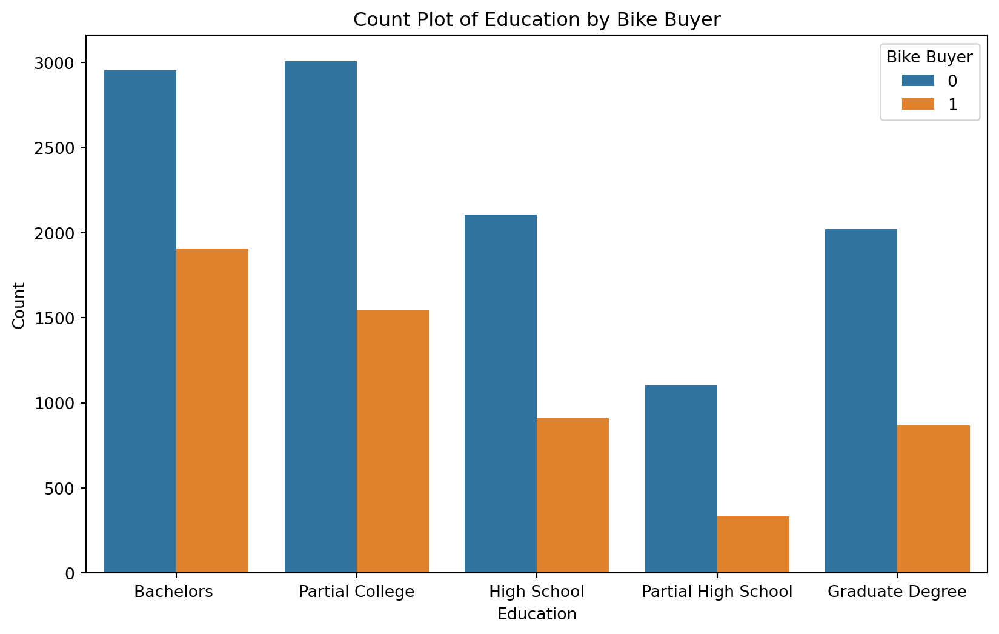
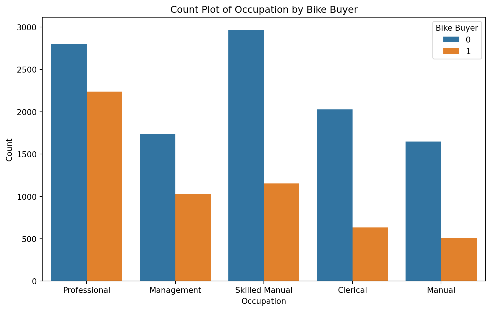
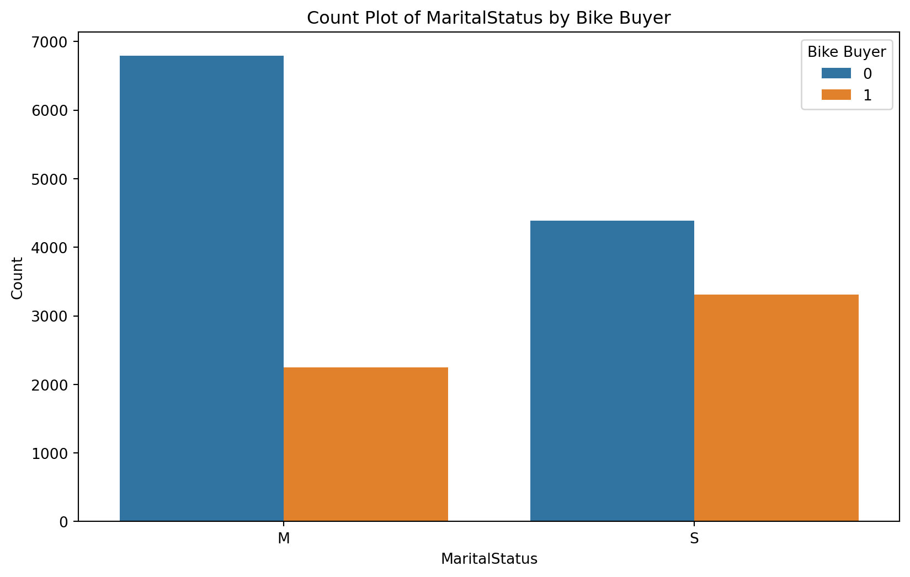

Predicting Customer Purchasing Behavior: A Machine Learning Approach
Introduction
Project Overview
In this final challenge, we will apply key principles and techniques learned throughout the course to build, test, and optimize a machine learning model. The goal is to analyze customer data from the Adventure Works Cycles company to predict customer purchasing behavior.
Dataset Description
The Adventure Works Cycles company collected comprehensive data on their existing customers, including demographic information and purchase history. The dataset consists of three files:
AdvWorksCusts.csv: Customer demographic data, containing fields such as CustomerID, Title, FirstName, LastName, Address, City, StateProvince, CountryRegion, PostalCode, PhoneNumber, BirthDate, Education, Occupation, Gender, MaritalStatus, HomeOwnerFlag, NumberCarsOwned, NumberChildrenAtHome, TotalChildren, and YearlyIncome.
AW_AveMonthSpend.csv: Sales data indicating the average monthly spend of customers, with fields CustomerID and AveMonthSpend.
AW_BikeBuyer.csv: Sales data indicating whether a customer has purchased a bike, with fields CustomerID and BikeBuyer.
Purpose
The purpose of this project is to explore the Adventure Works Cycles customer data, build a classification model to predict whether a customer will purchase a bike.
Workflow Process
Data Exploration:
Load and inspect the datasets.
Perform exploratory data analysis (EDA) to understand customer characteristics and purchasing behavior.
Visualize relationships between demographic features and purchasing patterns.
Preprocessing:
Clean and preprocess the data (handle missing values, encode categorical variables, normalize/standardize numerical features).
Merge datasets based on CustomerID to create a unified dataset for analysis.
Building the Classification Model:
Split the data into training and test sets.
Select appropriate features and target variable (BikeBuyer).
Train a classification model (e.g., logistic regression, decision tree, random forest) to predict bike purchasing behavior.
Optimize the model using cross-validation and hyperparameter tuning.
Testing the Model:
Evaluate the model’s performance on the test set using metrics such as accuracy, precision, recall, and F1-score.
Analyze the model’s strengths
Conclusion
This project provides an opportunity to apply machine learning techniques to real-world business data. By analyzing the Adventure Works Cycles customer data, we aim to uncover patterns and make predictions that can help the company better understand their customers and enhance their marketing strategies. The insights gained and models developed will be crucial for making data-driven decisions and improving customer engagement.
Data Exploration Phase
In the data exploration phase, we aim to understand the structure, quality, and key characteristics of our datasets. Here is a description and some basic Python commands to get started with data exploration:
# Import necessary librariesimport pandas as pd# Load datasetscustomers = pd.read_csv('AdvWorksCusts.csv')monthly_spend = pd.read_csv('AW_AveMonthSpend.csv')bike_buyer = pd.read_csv('AW_BikeBuyer.csv')# Inspect the first few rows of each datasetprint("Customers DataFrame:")print(customers.head())print("\nMonthly Spend DataFrame:")print(monthly_spend.head())print("\nBike Buyer DataFrame:")print(bike_buyer.head())# Generate summary statistics for numerical columnsprint("\nSummary Statistics for Customers DataFrame:")print(customers.describe())print("\nSummary Statistics for Monthly Spend DataFrame:")print(monthly_spend.describe())print("\nSummary Statistics for Bike Buyer DataFrame:")print(bike_buyer.describe())# Identify missing valuesprint("\nMissing Values in Customers DataFrame:")print(customers.isnull().sum())print("\nMissing Values in Monthly Spend DataFrame:")print(monthly_spend.isnull().sum())print("\nMissing Values in Bike Buyer DataFrame:")print(bike_buyer.isnull().sum())# Examine data types of each columnprint("\nData Types in Customers DataFrame:")print(customers.dtypes)print("\nData Types in Monthly Spend DataFrame:")print(monthly_spend.dtypes)print("\nData Types in Bike Buyer DataFrame:")print(bike_buyer.dtypes)# Look at unique values in categorical columns of Customers DataFramecategorical_columns = ['Title', 'Education', 'Occupation', 'Gender', 'MaritalStatus']for column in categorical_columns:print(f"\nUnique values in {column} column:")print(customers[column].unique())
Customers DataFrame:
CustomerID Title FirstName MiddleName LastName Suffix \
0 11000 NaN Jon V Yang NaN
1 11001 NaN Eugene L Huang NaN
2 11002 NaN Ruben NaN Torres NaN
3 11003 NaN Christy NaN Zhu NaN
4 11004 NaN Elizabeth NaN Johnson NaN
AddressLine1 AddressLine2 City StateProvinceName ... \
0 3761 N. 14th St NaN Rockhampton Queensland ...
1 2243 W St. NaN Seaford Victoria ...
2 5844 Linden Land NaN Hobart Tasmania ...
3 1825 Village Pl. NaN North Ryde New South Wales ...
4 7553 Harness Circle NaN Wollongong New South Wales ...
BirthDate Education Occupation Gender MaritalStatus HomeOwnerFlag \
0 1966-04-08 Bachelors Professional M M 1
1 1965-05-14 Bachelors Professional M S 0
2 1965-08-12 Bachelors Professional M M 1
3 1968-02-15 Bachelors Professional F S 0
4 1968-08-08 Bachelors Professional F S 1
NumberCarsOwned NumberChildrenAtHome TotalChildren YearlyIncome
0 0 0 2 137947
1 1 3 3 101141
2 1 3 3 91945
3 1 0 0 86688
4 4 5 5 92771
[5 rows x 23 columns]
Monthly Spend DataFrame:
CustomerID AveMonthSpend
0 11000 89
1 11001 117
2 11002 123
3 11003 50
4 11004 95
Bike Buyer DataFrame:
CustomerID BikeBuyer
0 11000 0
1 11001 1
2 11002 0
3 11003 0
4 11004 1
Summary Statistics for Customers DataFrame:
CustomerID HomeOwnerFlag NumberCarsOwned NumberChildrenAtHome \
count 16519.000000 16519.000000 16519.000000 16519.000000
mean 20234.225195 0.673891 1.500999 0.992009
std 5342.515987 0.468802 1.138962 1.515048
min 11000.000000 0.000000 0.000000 0.000000
25% 15604.500000 0.000000 1.000000 0.000000
50% 20221.000000 1.000000 2.000000 0.000000
75% 24860.500000 1.000000 2.000000 2.000000
max 29482.000000 1.000000 4.000000 5.000000
TotalChildren YearlyIncome
count 16519.000000 16519.000000
mean 2.006235 78122.511532
std 1.682736 39710.985718
min 0.000000 9482.000000
25% 0.000000 47807.500000
50% 2.000000 76120.000000
75% 3.000000 105194.500000
max 5.000000 196511.000000
Summary Statistics for Monthly Spend DataFrame:
CustomerID AveMonthSpend
count 16519.000000 16519.000000
mean 20234.225195 72.405957
std 5342.515987 27.285370
min 11000.000000 22.000000
25% 15604.500000 52.000000
50% 20221.000000 68.000000
75% 24860.500000 84.000000
max 29482.000000 176.000000
Summary Statistics for Bike Buyer DataFrame:
CustomerID BikeBuyer
count 16519.000000 16519.000000
mean 20234.225195 0.332284
std 5342.515987 0.471046
min 11000.000000 0.000000
25% 15604.500000 0.000000
50% 20221.000000 0.000000
75% 24860.500000 1.000000
max 29482.000000 1.000000
Missing Values in Customers DataFrame:
CustomerID 0
Title 16431
FirstName 0
MiddleName 6985
LastName 0
Suffix 16517
AddressLine1 0
AddressLine2 16243
City 0
StateProvinceName 0
CountryRegionName 0
PostalCode 0
PhoneNumber 0
BirthDate 0
Education 0
Occupation 0
Gender 0
MaritalStatus 0
HomeOwnerFlag 0
NumberCarsOwned 0
NumberChildrenAtHome 0
TotalChildren 0
YearlyIncome 0
dtype: int64
Missing Values in Monthly Spend DataFrame:
CustomerID 0
AveMonthSpend 0
dtype: int64
Missing Values in Bike Buyer DataFrame:
CustomerID 0
BikeBuyer 0
dtype: int64
Data Types in Customers DataFrame:
CustomerID int64
Title object
FirstName object
MiddleName object
LastName object
Suffix object
AddressLine1 object
AddressLine2 object
City object
StateProvinceName object
CountryRegionName object
PostalCode object
PhoneNumber object
BirthDate object
Education object
Occupation object
Gender object
MaritalStatus object
HomeOwnerFlag int64
NumberCarsOwned int64
NumberChildrenAtHome int64
TotalChildren int64
YearlyIncome int64
dtype: object
Data Types in Monthly Spend DataFrame:
CustomerID int64
AveMonthSpend int64
dtype: object
Data Types in Bike Buyer DataFrame:
CustomerID int64
BikeBuyer int64
dtype: object
Unique values in Title column:
[nan 'Ms.' 'Mr.' 'Mrs.' 'Sr.' 'Ms']
Unique values in Education column:
['Bachelors ' 'Partial College' 'High School' 'Partial High School'
'Graduate Degree']
Unique values in Occupation column:
['Professional' 'Management' 'Skilled Manual' 'Clerical' 'Manual']
Unique values in Gender column:
['M' 'F']
Unique values in MaritalStatus column:
['M' 'S']
Description of the Code
Import Libraries: Import the pandas library for data manipulation.
Load Data: Load the three datasets (AdvWorksCusts.csv, AW_AveMonthSpend.csv, and AW_BikeBuyer.csv) into pandas DataFrames.
Inspect Data: Print the first few rows of each DataFrame to understand the data structure.
Summary Statistics: Use the describe method to get summary statistics for the numerical columns in each DataFrame.
Missing Values: Use the isnull method combined with sum to identify missing values in each DataFrame.
Data Types: Use the dtypes attribute to examine the data types of each column in the DataFrames.
Unique Values: For categorical columns in the customers DataFrame, use the unique method to display the unique values.
By performing these steps, we gain a comprehensive understanding of the datasets, which is essential for the subsequent preprocessing and model building phases.
In addition to the basic exploration commands, visualizing relationships between variables can provide valuable insights, especially for classification tasks. Here, we will use the matplotlib and seaborn libraries to create plots that help us understand the relationships between various categories.
# Import necessary librariesimport pandas as pdimport matplotlib.pyplot as pltimport seaborn as sns# Load datasetscustomers = pd.read_csv('AdvWorksCusts.csv')monthly_spend = pd.read_csv('AW_AveMonthSpend.csv')bike_buyer = pd.read_csv('AW_BikeBuyer.csv')# Merge datasets on CustomerIDdata = pd.merge(customers, bike_buyer, on='CustomerID')# Inspect the first few rows of the merged datasetprint("Merged DataFrame:")print(data.head())# Plot the distribution of the target variable (BikeBuyer)plt.figure(figsize=(8, 6))sns.countplot(data=data, x='BikeBuyer')plt.title('Distribution of Bike Buyer')plt.xlabel('Bike Buyer')plt.ylabel('Count')plt.show()# Plot count plots for categorical variablescategorical_columns = ['Education', 'Occupation', 'Gender', 'MaritalStatus']for column in categorical_columns: plt.figure(figsize=(10, 6)) sns.countplot(data=data, x=column, hue='BikeBuyer') plt.title(f'Count Plot of {column} by Bike Buyer') plt.xlabel(column) plt.ylabel('Count') plt.legend(title='Bike Buyer') plt.show()# Convert BirthDate to Agedata['BirthDate'] = pd.to_datetime(data['BirthDate'])data['Age'] =1998- data['BirthDate'].dt.year# Plot box plots for numerical vs. categorical variablesnumerical_columns = ['YearlyIncome', 'Age']for column in numerical_columns: plt.figure(figsize=(10, 6)) sns.boxplot(data=data, x='BikeBuyer', y=column) plt.title(f'Box Plot of {column} by Bike Buyer') plt.xlabel('Bike Buyer') plt.ylabel(column) plt.show()# Plot a correlation heatmapplt.figure(figsize=(12, 8))correlation_matrix = data[['YearlyIncome', 'Age', 'NumberCarsOwned', 'NumberChildrenAtHome', 'TotalChildren', 'BikeBuyer']].corr()sns.heatmap(correlation_matrix, annot=True, cmap='coolwarm', vmin=-1, vmax=1)plt.title('Correlation Heatmap')plt.show()
Merged DataFrame:
CustomerID Title FirstName MiddleName LastName Suffix \
0 11000 NaN Jon V Yang NaN
1 11001 NaN Eugene L Huang NaN
2 11002 NaN Ruben NaN Torres NaN
3 11003 NaN Christy NaN Zhu NaN
4 11004 NaN Elizabeth NaN Johnson NaN
AddressLine1 AddressLine2 City StateProvinceName ... \
0 3761 N. 14th St NaN Rockhampton Queensland ...
1 2243 W St. NaN Seaford Victoria ...
2 5844 Linden Land NaN Hobart Tasmania ...
3 1825 Village Pl. NaN North Ryde New South Wales ...
4 7553 Harness Circle NaN Wollongong New South Wales ...
Education Occupation Gender MaritalStatus HomeOwnerFlag \
0 Bachelors Professional M M 1
1 Bachelors Professional M S 0
2 Bachelors Professional M M 1
3 Bachelors Professional F S 0
4 Bachelors Professional F S 1
NumberCarsOwned NumberChildrenAtHome TotalChildren YearlyIncome BikeBuyer
0 0 0 2 137947 0
1 1 3 3 101141 1
2 1 3 3 91945 0
3 1 0 0 86688 0
4 4 5 5 92771 1
[5 rows x 24 columns]



Description of the Code
Import Libraries for Plotting: Import matplotlib.pyplot for basic plotting and seaborn for advanced visualization.
Merge Datasets: Merge the customers and bike_buyer DataFrames on CustomerID to create a consolidated dataset for analysis.
Distribution of Target Variable: Use sns.countplot to visualize the distribution of the BikeBuyer variable.
Count Plots for Categorical Variables: For each categorical column in Education, Occupation, Gender, and MaritalStatus, use sns.countplot to plot the counts of categories, separated by the BikeBuyer variable.
Convert BirthDate to Age: Calculate the Age of each customer from their BirthDate.
Box Plots for Numerical vs. Categorical Variables: For each numerical column in YearlyIncome and Age, use sns.boxplot to visualize the distribution of values, separated by the BikeBuyer variable.
Correlation Heatmap: Use sns.heatmap to visualize the correlation between numerical features, including the target variable BikeBuyer.
These visualizations help in understanding the relationships between features and the target variable, aiding in the feature selection and model building processes.
Data Preprocessing Phase
In this phase, we will clean and preprocess the data to prepare it for model building. Here is a description and the code for the preprocessing steps:
# Import necessary librariesimport pandas as pdimport numpy as npimport matplotlib.pyplot as pltfrom datetime import datetime, date# Enable inline plotting%matplotlib inline# Load datasetsAdvWorksCusts = pd.read_csv('AdvWorksCusts.csv')AW_BikeBuyer = pd.read_csv('AW_BikeBuyer.csv')AW_AveMonthSpend = pd.read_csv('AW_AveMonthSpend.csv')# Remove duplicatesAdvWorksCusts.drop_duplicates(subset=['CustomerID'], keep='first', inplace=True)AW_BikeBuyer.drop_duplicates(subset=['CustomerID'], keep='first', inplace=True)AW_AveMonthSpend.drop_duplicates(subset=['CustomerID'], keep='first', inplace=True)# Merge datasets on CustomerIDdf = pd.merge(AdvWorksCusts, AW_AveMonthSpend, on='CustomerID')df = pd.merge(df, AW_BikeBuyer, on='CustomerID')# Print the shape of the merged DataFrameprint(df.shape)# Drop unnecessary columnsdf.drop(['Title', 'FirstName', 'LastName', 'MiddleName', 'Suffix', 'AddressLine1','AddressLine2', 'PhoneNumber', 'City', 'PostalCode'], axis=1, inplace=True)# Check data typesprint(df.dtypes)# Function to count unique values in categorical columnsdef count_unique(df, cols):for col in cols:print('\n'+'For column '+ col)print(df[col].value_counts())cat_cols = ['Education', 'Occupation', 'Gender', 'CountryRegionName', 'MaritalStatus', 'BikeBuyer', 'HomeOwnerFlag']count_unique(df, cat_cols)# Convert BirthDate to Agedf['BirthDate'] = pd.to_datetime(df['BirthDate'])df['Coll_date'] = pd.to_datetime(date(year=1998, month=1, day=1))df['Age'] = (df['Coll_date'] - df['BirthDate']).dt.days //365# Drop intermediate columns used for age calculationdf.drop(['Coll_date', 'BirthDate'], axis=1, inplace=True)df['Age'] = df['Age'].astype(int)# Create age rangesdf['AgeRange'] = ['Under 25'if (x <25)else'Between 25 and 45'if (25<= x <=45)else'Between 45 and 55'if (45< x <=55)else'Over 55'for x in df['Age']]df['AgeRange'].value_counts().plot(kind='bar')plt.title('Age Range Distribution')plt.xlabel('Age Range')plt.ylabel('Count')plt.show()# Convert columns to categorical data typesdf['CountryRegionName'] = df['CountryRegionName'].astype('category')df['Education'] = df['Education'].astype('category')df['Occupation'] = df['Occupation'].astype('category')df['Gender'] = df['Gender'].astype('category')df['MaritalStatus'] = df['MaritalStatus'].astype('category')df['AgeRange'] = df['AgeRange'].astype('category')df['BikeBuyer'] = df['BikeBuyer'].astype('category')df['HomeOwnerFlag'] = df['HomeOwnerFlag'].astype('category')# Check data types againprint(df.dtypes)# Log transform the YearlyIncome columndf['log_YearlyIncome'] = np.log(df['YearlyIncome'])# Drop irrelevant columnsdf.drop(['NumberChildrenAtHome', 'Age', 'AveMonthSpend', 'HomeOwnerFlag', 'YearlyIncome'], axis=1, inplace=True)# Print DataFrame infodf.info()# Save the processed DataFrame to a CSV filedf.to_csv('Class_BikeBuyer.csv', index=False, header=True)
(16404, 25)
CustomerID int64
StateProvinceName object
CountryRegionName object
BirthDate object
Education object
Occupation object
Gender object
MaritalStatus object
HomeOwnerFlag int64
NumberCarsOwned int64
NumberChildrenAtHome int64
TotalChildren int64
YearlyIncome int64
AveMonthSpend int64
BikeBuyer int64
dtype: object
For column Education
Education
Bachelors 4758
Partial College 4451
High School 2944
Graduate Degree 2851
Partial High School 1400
Name: count, dtype: int64
For column Occupation
Occupation
Professional 4922
Skilled Manual 4038
Management 2718
Clerical 2597
Manual 2129
Name: count, dtype: int64
For column Gender
Gender
M 8290
F 8114
Name: count, dtype: int64
For column CountryRegionName
CountryRegionName
United States 6935
Australia 3194
United Kingdom 1709
France 1591
Germany 1577
Canada 1398
Name: count, dtype: int64
For column MaritalStatus
MaritalStatus
M 8852
S 7552
Name: count, dtype: int64
For column BikeBuyer
BikeBuyer
0 10953
1 5451
Name: count, dtype: int64
For column HomeOwnerFlag
HomeOwnerFlag
1 11058
0 5346
Name: count, dtype: int64
Import Libraries: Import the required libraries for data manipulation and visualization.
Load Data: Load the three datasets into pandas DataFrames.
Remove Duplicates: Ensure there are no duplicate entries in the datasets by removing duplicates based on CustomerID.
Merge Data: Combine the datasets into a single DataFrame using CustomerID.
Drop Unnecessary Columns: Remove columns that are not useful for the analysis, such as name and address details.
Inspect Data Types: Print the data types of each column to ensure they are appropriate.
Count Unique Values: Define a function to count and print the unique values for categorical columns.
Convert BirthDate to Age: Calculate the age of customers from their birth dates by subtracting from a fixed collection date.
Create Age Ranges: Categorize the age values into ranges for better analysis and visualization.
Convert to Categorical Data Types: Convert relevant columns to the categorical data type for efficient storage and processing.
Log Transformation: Apply a log transformation to the YearlyIncome column to normalize the distribution.
Drop Irrelevant Columns: Remove columns that are not needed for the classification model.
Save Processed Data: Save the cleaned and processed DataFrame to a CSV file for future use.
This preprocessing ensures that the data is clean, well-structured, and ready for building the classification model in the next phase.
Preparing the Test Data for Classification
In this phase, we will prepare the test dataset for classification by performing similar preprocessing steps as we did for the training dataset. This includes cleaning the data, calculating the age, and creating categorical variables. Here’s the code to accomplish this:
# Import necessary librariesimport pandas as pdimport numpy as npfrom datetime import date# Load the test datasetAW_test = pd.read_csv('AW_test.csv')# Display the first few rows of the test datasetprint(AW_test.head())# Drop unnecessary columnsAW_test.drop(['Title', 'FirstName', 'LastName', 'MiddleName', 'Suffix','AddressLine1', 'AddressLine2', 'StateProvinceName','PhoneNumber', 'City', 'PostalCode'], axis=1, inplace=True)# Check data typesprint(AW_test.dtypes)# Convert BirthDate to AgeAW_test['BirthDate'] = pd.to_datetime(AW_test['BirthDate'])AW_test['Coll_date'] = pd.to_datetime(date(year=1998, month=1, day=1))AW_test['Age'] = (AW_test['Coll_date'] - AW_test['BirthDate']).dt.days //365# Drop intermediate columns used for age calculationAW_test.drop(['Coll_date', 'BirthDate'], axis=1, inplace=True)AW_test['Age'] = AW_test['Age'].astype(int)# Create age rangesAW_test['AgeRange'] = ['Under 25'if (x <25)else'Between 25 and 45'if (25<= x <=45)else'Between 45 and 55'if (45< x <=55)else'Over 55'for x in AW_test['Age']]# Log transform the YearlyIncome columnAW_test['log_YearlyIncome'] = np.log(AW_test['YearlyIncome'])# Drop irrelevant columnsAW_test.drop(['NumberChildrenAtHome', 'Age', 'HomeOwnerFlag', 'YearlyIncome'], axis=1, inplace=True)# Print DataFrame info to verify preprocessingprint(AW_test.info())# Save the preprocessed test DataFrame to a CSV fileAW_test.to_csv('AW_Test_prepped_classification.csv', index=False, header=True)
CustomerID Title FirstName MiddleName LastName Suffix \
0 18988 NaN Courtney A Baker NaN
1 29135 NaN Adam C Allen NaN
2 12156 NaN Bonnie NaN Raji NaN
3 13749 NaN Julio C Alonso NaN
4 27780 NaN Christy A Andersen NaN
AddressLine1 AddressLine2 City StateProvinceName ... \
0 8727 Buena Vista Ave. NaN Fremont California ...
1 3491 Cook Street NaN Haney British Columbia ...
2 359 Pleasant Hill Rd NaN Burbank California ...
3 8945 Euclid Ave. NaN Burlingame California ...
4 42, boulevard Tremblay NaN Dunkerque Nord ...
BirthDate Education Occupation Gender MaritalStatus \
0 1/5/1945 Bachelors Management F S
1 10/4/1964 Bachelors Skilled Manual M M
2 1/12/1934 Graduate Degree Management F M
3 9/22/1958 Graduate Degree Skilled Manual M M
4 3/19/1965 High School Manual F M
HomeOwnerFlag NumberCarsOwned NumberChildrenAtHome TotalChildren \
0 0 2 0 5
1 1 2 2 4
2 1 2 0 4
3 1 0 0 4
4 1 1 2 2
YearlyIncome
0 86931
1 100125
2 103985
3 127161
4 21876
[5 rows x 23 columns]
CustomerID int64
CountryRegionName object
BirthDate object
Education object
Occupation object
Gender object
MaritalStatus object
HomeOwnerFlag int64
NumberCarsOwned int64
NumberChildrenAtHome int64
TotalChildren int64
YearlyIncome int64
dtype: object
<class 'pandas.core.frame.DataFrame'>
RangeIndex: 500 entries, 0 to 499
Data columns (total 10 columns):
# Column Non-Null Count Dtype
--- ------ -------------- -----
0 CustomerID 500 non-null int64
1 CountryRegionName 500 non-null object
2 Education 500 non-null object
3 Occupation 500 non-null object
4 Gender 500 non-null object
5 MaritalStatus 500 non-null object
6 NumberCarsOwned 500 non-null int64
7 TotalChildren 500 non-null int64
8 AgeRange 500 non-null object
9 log_YearlyIncome 500 non-null float64
dtypes: float64(1), int64(3), object(6)
memory usage: 39.2+ KB
None
Summary of Key Steps in the Code
Load Test Dataset: Load the test dataset using pd.read_csv().
Drop Unnecessary Columns: Remove columns that do not contribute to the classification task.
Convert BirthDate to Age: Calculate the age of each customer and drop unnecessary columns.
Create Age Ranges: Classify customers into age ranges for better analysis.
Log Transformation: Apply a log transformation to the YearlyIncome column to normalize its distribution.
Drop Irrelevant Columns: Remove columns that are not needed for the classification model.
Save Preprocessed Data: Save the cleaned test DataFrame to a CSV file for use in the classification model.
This prepares the test data in the same way as the training data, ensuring consistency and allowing for accurate predictions using the classification model.
Model Building Phase
In this phase, we will build a classification model using both logistic regression and random forest. This includes encoding categorical features, scaling numerical features, splitting the data into training and testing sets, training the models, and evaluating their performance. Finally, we will save the trained models for future use.
import pandas as pdimport numpy as npfrom sklearn import preprocessingimport sklearn.model_selection as msfrom sklearn import feature_selection as fsfrom sklearn import linear_modelfrom sklearn.ensemble import RandomForestClassifierimport sklearn.metrics as sklmimport pickle# Load the datasetdf = pd.read_csv('Class_BikeBuyer.csv')df.info()# Extract the labelslabels = np.array(df['BikeBuyer'])# Function to encode categorical string featuresdef encode_string(cat_features): enc = preprocessing.LabelEncoder() enc.fit(cat_features) enc_cat_features = enc.transform(cat_features) ohe = preprocessing.OneHotEncoder() encoded = ohe.fit(enc_cat_features.reshape(-1, 1))return encoded.transform(enc_cat_features.reshape(-1, 1)).toarray()# List of categorical columnscategorical_columns = ['Education', 'Occupation', 'Gender', 'MaritalStatus', 'AgeRange']Features = encode_string(df['CountryRegionName'])for col in categorical_columns: temp = encode_string(df[col]) Features = np.concatenate([Features, temp], axis=1)# Add numerical featuresFeatures = np.concatenate([Features, np.array(df[['NumberCarsOwned', 'TotalChildren', 'log_YearlyIncome']])], axis=1)# Split the data into training and testing setsindx = ms.train_test_split(range(Features.shape[0]), test_size=0.2)X_train = Features[indx[0], :]y_train = np.ravel(labels[indx[0]])X_test = Features[indx[1], :]y_test = np.ravel(labels[indx[1]])# Scale the numerical featuresscaler = preprocessing.StandardScaler().fit(X_train[:, 25:])X_train[:, 25:] = scaler.transform(X_train[:, 25:])X_test[:, 25:] = scaler.transform(X_test[:, 25:])# Logistic Regression Modellogistic_mod = linear_model.LogisticRegression()logistic_mod.fit(X_train, y_train)logistic_probabilities = logistic_mod.predict_proba(X_test)# Random Forest Modelrandom_forest_mod = RandomForestClassifier(n_estimators=100, random_state=42)random_forest_mod.fit(X_train, y_train)random_forest_probabilities = random_forest_mod.predict_proba(X_test)# Function to score the model based on a thresholddef score_model(probs, threshold):return np.array([1if x > threshold else0for x in probs[:, 1]])# Logistic Regression Scoreslogistic_scores = score_model(logistic_probabilities, 0.5)# Random Forest Scoresrandom_forest_scores = score_model(random_forest_probabilities, 0.5)# Function to print metricsdef print_metrics(labels, scores): metrics = sklm.precision_recall_fscore_support(labels, scores) conf = sklm.confusion_matrix(labels, scores)print(' Confusion matrix')print(' Score positive Score negative')print('Actual positive %6d'% conf[0, 0] +' %5d'% conf[0, 1])print('Actual negative %6d'% conf[1, 0] +' %5d'% conf[1, 1])print('')print('Accuracy %0.2f'% sklm.accuracy_score(labels, scores))print(' ')print(' Positive Negative')print('Num case %6d'% metrics[3][0] +' %6d'% metrics[3][1])print('Precision %6.2f'% metrics[0][0] +' %6.2f'% metrics[0][1])print('Recall %6.2f'% metrics[1][0] +' %6.2f'% metrics[1][1])print('F1 %6.2f'% metrics[2][0] +' %6.2f'% metrics[2][1])# Print metrics for Logistic Regressionprint("Logistic Regression Metrics:")print_metrics(y_test, logistic_scores)# Print metrics for Random Forestprint("\nRandom Forest Metrics:")print_metrics(y_test, random_forest_scores)# Save the modelspickle.dump(logistic_mod, open('logistic_classification_model.sav', 'wb'))pickle.dump(random_forest_mod, open('random_forest_classification_model.sav', 'wb'))
Import Libraries: Import the necessary libraries for data manipulation, model building, and evaluation.
Load Dataset: Load the preprocessed dataset.
Extract Labels: Extract the target labels (BikeBuyer) from the dataset.
Encode Categorical Features: Encode categorical features using label encoding and one-hot encoding.
Add Numerical Features: Add numerical features to the feature set.
Split Data: Split the data into training and testing sets.
Scale Numerical Features: Standardize the numerical features.
Logistic Regression Model: Train a logistic regression model and predict probabilities.
Random Forest Model: Train a random forest model and predict probabilities.
Score Model: Define a function to score the model based on a probability threshold.
Print Metrics: Define a function to print evaluation metrics and confusion matrix.
Save Models: Save the trained logistic regression and random forest models using pickle.
By including both logistic regression and random forest models, we can compare their performance and choose the best model for our classification task.
Preparing the Test Data for Classification
In this phase, we will prepare the test data by encoding categorical features, scaling numerical features, and using the trained logistic regression model to make predictions on the test data. Finally, we will save the predictions to a CSV file.
import pandas as pdimport numpy as npfrom sklearn import preprocessingimport pickle# Load the trained modelslogistic_model = pickle.load(open('logistic_classification_model.sav', 'rb'))random_forest_model = pickle.load(open('random_forest_classification_model.sav', 'rb'))# Load the test datasetdf = pd.read_csv('AW_Test_prepped_classification.csv')df.info()# Function to encode categorical string featuresdef encode_string(cat_features): enc = preprocessing.LabelEncoder() enc.fit(cat_features) enc_cat_features = enc.transform(cat_features) ohe = preprocessing.OneHotEncoder() encoded = ohe.fit(enc_cat_features.reshape(-1, 1))return encoded.transform(enc_cat_features.reshape(-1, 1)).toarray()# List of categorical columnscategorical_columns = ['Education', 'Occupation', 'Gender', 'MaritalStatus', 'AgeRange']Features = encode_string(df['CountryRegionName'])for col in categorical_columns: temp = encode_string(df[col]) Features = np.concatenate([Features, temp], axis=1)# Add numerical featuresFeatures = np.concatenate([Features, np.array(df[['NumberCarsOwned', 'TotalChildren', 'log_YearlyIncome']])], axis=1)# Scale the numerical featuresscaler = preprocessing.StandardScaler().fit(Features[:, 25:])Features[:, 25:] = scaler.transform(Features[:, 25:])# Predictions with logistic regressionlogistic_class_pred = pd.DataFrame(logistic_model.predict(Features))logistic_class_pred.rename(columns={0: 'LogisticPredBikeBuyer'}, inplace=True)logistic_class_pred['CustomerID'] = df['CustomerID']# Predictions with random forestrandom_forest_class_pred = pd.DataFrame(random_forest_model.predict(Features))random_forest_class_pred.rename(columns={0: 'RandomForestPredBikeBuyer'}, inplace=True)random_forest_class_pred['CustomerID'] = df['CustomerID']# Combine the predictionscombined_class_pred = logistic_class_pred.merge(random_forest_class_pred, on='CustomerID')combined_class_pred = combined_class_pred[['CustomerID', 'LogisticPredBikeBuyer', 'RandomForestPredBikeBuyer']]# Save the combined predictions to a CSV filecombined_class_pred.to_csv('CombinedClassPred.csv', index=False)
Load Models: Load the pre-trained logistic regression and random forest models using pickle.
Load Test Dataset: Load the preprocessed test dataset.
Encode Categorical Features: Encode the categorical features using label encoding and one-hot encoding.
Add Numerical Features: Add the numerical features to the feature set.
Scale Numerical Features: Standardize the numerical features.
Make Predictions:
Use the logistic regression model to predict the bike buyer class.
Use the random forest model to predict the bike buyer class.
Combine Predictions: Combine the predictions from both models into a single DataFrame.
Save Predictions: Save the combined predictions to a CSV file.
This approach allows you to compare the predictions from both models side by side and assess their performance.
Conclusion
This project aimed to build a classification model to predict whether customers of Adventure Works Cycles would purchase a bike. The workflow involved several key steps: data exploration, preprocessing, model building, and prediction on test data. Below is a detailed conclusion highlighting the workflow, key insights, recommendations, and final thoughts.
Workflow
Data Exploration:
Loaded and examined the dataset to understand the structure and types of data.
Identified key demographic features and purchasing behaviors.
Visualized relationships between different features and the target variable.
Data Preprocessing:
Merged multiple datasets to create a comprehensive view of each customer.
Handled missing values and duplicates to ensure data quality.
Encoded categorical variables and scaled numerical features to prepare the data for modeling.
Model Building:
Split the data into training and testing sets.
Built and trained a logistic regression model and a random forest classifier.
Evaluated the models using metrics such as accuracy, precision, recall, and F1-score.
Saved the trained logistic regression model for future use.
Prediction on Test Data:
Prepared the test data by encoding and scaling features similarly to the training data.
Used the trained model to predict the likelihood of bike purchases for new customers.
Saved the predictions to a CSV file for further analysis.
Key Insights
Demographic Influence: Certain demographic features, such as age, education level, and occupation, showed significant influence on the likelihood of purchasing a bike.
Income Level: Higher income levels were generally associated with a higher probability of purchasing a bike.
Feature Importance: The random forest model provided insights into feature importance, highlighting which variables were most predictive of bike purchasing behavior.
Recommendations
Targeted Marketing: Use the insights from the model to target marketing efforts towards demographics that are more likely to purchase bikes. For example, focus on younger professionals with higher income levels.
Customer Segmentation: Segment the customer base based on predicted likelihood of purchasing a bike and tailor promotions and communications accordingly.
Feature Enhancement: Collect additional features that could improve the model’s predictive power, such as customer lifestyle and preferences.
Final Thoughts
This project demonstrated the power of machine learning in predicting customer behavior and provided valuable insights for business decision-making. The classification models built in this project can be further refined and integrated into the company’s customer relationship management (CRM) systems to enhance marketing strategies and increase bike sales. Future work could involve exploring more advanced machine learning algorithms, incorporating more data sources, and conducting periodic model retraining to maintain accuracy as customer behavior evolves.